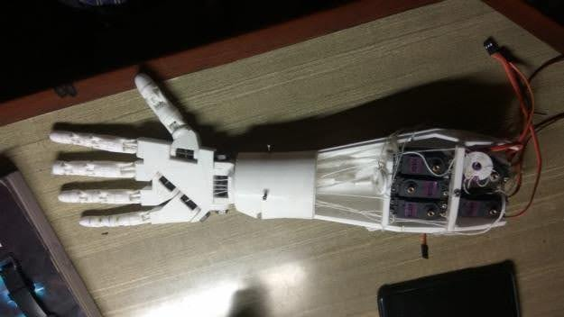

Problem Statement
Advanced prosthetic arms can be expensive and difficult to customize. The goal of this project was to prototype a more accessible robotic arm that could demonstrate core grasping functions using affordable components and a printable mechanical structure.
Approach
The design broke the arm into mechanical, actuation, and control layers. Finger motion was driven through compact actuators, while the frame was designed for simple assembly and iterative replacement of parts.
Solution

- Designed the palm, fingers, and linkage structure for printable fabrication.
- Integrated servo-driven actuation for basic grasp and release movements.
- Built embedded control logic for repeatable hand poses.
- Tested mechanical range of motion, grip behavior, and component durability.
The project emphasized practical assistive robotics: understandable mechanics, affordable parts, and a control stack that could be extended later.
Challenges
Small linkage changes had a major effect on finger motion and grip strength. The prototype required repeated mechanical tuning to reduce friction, avoid binding, and keep the hand motion smooth enough for reliable demonstrations.